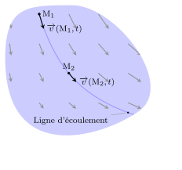
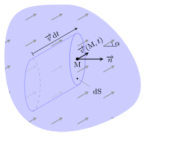
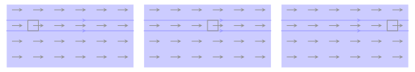

Tout d’abord, comme on l’a déjà dit, on décrit le fluide comme un ensemble d’une infinité de
particules de fluide. On considère, autour d’un point \(P\), un volume mésoscopique
\(\mathrm{d}\tau\). Ce volume contient un grand nombre \(N\) de molécules ce qui permet de
définir des grandeurs moyennes locales qui, elles, vont évoluer de façon continue. On
définit alors la vitesse locale \(\overrightarrow{v}\) d’une particule de fluide \(P\)
par :
$$
\quad \overrightarrow{v_P} = \frac{1}{N} \sum_{i=1}^N \overrightarrow{v_i}
= \langle \overrightarrow{v_i} \rangle
$$
où \(\overrightarrow{v_i}\) est le vecteur vitesse d’une molécule située dans le volume
\(\mathrm{d}\tau\). Ainsi, lorsque le fluide est au repos, \(\overrightarrow{v_P} =
\overrightarrow{0}\) bien que \( \overrightarrow{v_i} \neq \overrightarrow{0}\).
Deux approches différentes existent pour décrire le fluide en mouvement.
Point de vue de Lagrange
On s’intéresse à l’histoire des particules de fluide en suivant leur trajectoire. Chaque
trajectoire est donc associée à une particule donnée (que l’on notera \(P\)). Au cours du
trajet, le vecteur vitesse est tangent à la trajectoire, et l’accélération de la particule
s’écrit :
$$
\quad \overrightarrow{a_P} = \frac{\mathrm{d} \overrightarrow{v_P} }{\mathrm{d} t}
$$
conformément aux lois vues en mécanique du point.
Notion de trajectoire.
Point de vue d’Euler
Dans cette approche, on s’intéresse au fluide dans son ensemble à un instant \(t\). Pour
chaque point du fluide (notons le \(M\)) on observe le vecteur vitesse à l’instant \(t\).
Comme ce vecteur dépend du temps \(t\) et de la position du point considéré, on note cette
grandeur \(\overrightarrow{v}(M,t)\) ou \(\overrightarrow{v}(x,y,z,t)\).
Du point de vue mathématique, il s’agit d’un champ vectoriel spatio-temporel. Pour
représenter le champ de vitesse, on utilise la notion de ligne de champ : à un
instant \(t\) fixé, on trace différentes courbes qui ont la particularité d’avoir leur
tangente en un point colinéaire à la vitesse en ce même point, ceci pour tous les points de
la courbe. Ces courbes sont appelées lignes de courant ou lignes d’écoulement.
Notez que la ligne d’écoulement est fondamentalement différente d’une trajectoire, car tous
les points de la ligne sont observés au même instant, contrairement à la trajectoire.

Notion de ligne d’écoulement. Notez que toutes les vitesses représentées
concernent le même instant.
Pour un problème à deux dimensions, l’équation \(f(x,y)=0\) d’une ligne d’écoulement
s’obtient en résolvant l’équation différentielle
$$
\quad \frac{\mathrm{d}y}{\mathrm{d}x} = \frac{v_y(x,y,t)}{v_x(x,y,t)}
$$
avec \(t\) fixe.
Écoulement stationnaire
Définition
Un écoulement est stationnaire (ou permanent) si le champ de vitesse ne dépend pas
explicitement du temps \(t\).
Mathématiquement cela se traduit par :
$$
\quad \boxed{ \frac{\partial \overrightarrow{v}(x,y,z,t)}{\partial t}=\overrightarrow{0} }
$$
Cela signifie que :
l’expression du champ de vitesse ne dépend que de \(x\), \(y\) et \(z\) (en
coordonnées cartésiennes)
la carte du champ de vitesse est invariable au cours du temps
les lignes de courant sont fixes dans le temps
Attention, cela ne signifie pas que les particules se déplacent à vitesse constante.
Exemple :
Supposons un fluide en écoulement présentant un champ de vitesse
$$
\quad \overrightarrow{v}(M,t) = \frac{x}{\tau} \overrightarrow{u_x}
$$
avec \(\tau \gt 0\).
L’écoulement est stationnaire puisque \( \partial \overrightarrow{v}(M,t) / \partial t =
\overrightarrow{0}\). De plus, en tout point, le vecteur vitesse à la même direction. Par
conséquent, les lignes d’écoulement sont des droites parallèles de vecteur directeur
\(\overrightarrow{u_x}\).
Intéressons-nous à la vitesse d’une particule de fluide en particulier. Appelons \(P\) la
particule située en \(x_0\) à l’instant \(t=0\) et notons \(x_P(t)\) et
\(\overrightarrow{v_P}(t)\) respectivement sa position et sa vitesse au cours du temps. Le
lien entre la vitesse eulérienne \(\overrightarrow{v}(M,t)\) et la vitesse
lagrangienne \(\overrightarrow{v_P}(t)\) se traduit par :
$$
\quad \overrightarrow{v}(P(t),t) = \overrightarrow{v_P}(t)
$$
soit
$$
\quad \frac{x}{\tau} = \frac{\mathrm{d} x_P}{\mathrm{d}t}
$$
équation différentielle d’ordre un dont la solution s’écrit :
$$
\quad x_P = x_0 \rm{e}^{t/\tau}
$$
d’où
$$
\quad v_P = \frac{\mathrm{d} x_P}{\mathrm{d}t} = \frac{x_0}{\tau} \rm{e}^{t/\tau}
$$
Comme on le voit, la vitesse de P varie au cours du temps bien que l’écoulement soit
stationnaire.
Sur l’exemple précédent, on constate également que la trajectoire d’une particule se
confond avec la ligne d’écoulement. Cette propriété se généralise pour tous les écoulements
stationnaires.
Accélération d’une particule
Supposons que l’on connaisse le champ de vitesse eulérien \(\overrightarrow{v}(M,t)\) et que
l’on veuille déterminer l’accélération \(\overrightarrow{a}(M,t)\), c’est-à-dire
l’accélération d’une particule de fluide située à l’instant \(t\) au même point \(M\).
La difficulté du calcul réside dans le fait que si une particule se situe en \(M\) à
l’instant \(t\), elle ne situe plus au même point à l’instant . C’est
pourquoi, on ne peut pas écrire \(\overrightarrow{a}(M,t) = \partial \overrightarrow{v}(M,t)
/\partial t\).
Considérons une particule \(P\) située en \(M(x,y,z)\) à l’instant \(t\). Elle se trouve
alors en \(M^\prime(x + \delta x, y + \delta y, z + \delta z)\) à l’instant \(t+\delta t\).
Par définition, la particule présente une accélération :
$$
\quad \begin{aligned} \overrightarrow{a} &= \lim_{\delta t \to 0}
\frac{\overrightarrow{v}(M^\prime,t+\delta t) - \overrightarrow{v}(M,t)}{\delta t} \\
&= \lim_{\delta t \to 0}
\frac{\overrightarrow{v}(x + \delta x, y + \delta y, z + \delta z,t+\delta t)
- \overrightarrow{v}(x,y,z,t)}{\delta t}
\end{aligned}
$$
En utilisant le développement de Taylor à l’ordre un, on obtient :
$$
\quad \overrightarrow{v}(x + \delta x, y + \delta y, z + \delta z,t+\delta t)
\underset{\delta t \to 0}{=} \overrightarrow{v}(x,y,z,t)
+ \delta x \frac{\partial \overrightarrow{v}}{\partial x}
+ \delta y \frac{\partial \overrightarrow{v}}{\partial y}
+ \delta z \frac{\partial \overrightarrow{v}}{\partial z}
+ \delta t \frac{\partial \overrightarrow{v}}{\partial t}
$$
De sorte que
$$
\quad \overrightarrow{a} =
\underbrace{ \lim_{\delta t \to 0} \frac{\delta x}{\delta t} }_{v_x}
\frac{\partial \overrightarrow{v}}{\partial x}
+ \underbrace{ \lim_{\delta t \to 0} \frac{\delta y}{\delta t} }_{v_y}
\frac{\partial \overrightarrow{v}}{\partial y}
+ \underbrace{ \lim_{\delta t \to 0} \frac{\delta z}{\delta t} }_{v_z}
\frac{\partial \overrightarrow{v}}{\partial z}
+ \frac{\partial \overrightarrow{v}}{\partial t}
$$
Expression que l’on peut mettre sous forme compacte
$$
\quad \overrightarrow{a} = \frac{\partial \overrightarrow{v}}{\partial t}
+ \underbrace{ \left(
v_x \frac{\partial \overrightarrow{v}}{\partial x}
+ v_y \frac{\partial \overrightarrow{v}}{\partial y}
+ v_z \frac{\partial \overrightarrow{v}}{\partial z}
\right) }_{\overrightarrow{v} \cdot \overrightarrow{\nabla} } \overrightarrow{v}
$$
Champ d’accélération
Si une particule de fuide présente un vecteur vitesse \(\overrightarrow{v}(M,t)\) lorsqu’il
est en \(M\) à l’instant \(t\), alors son accélération vaut
$$
\quad \boxed{ \overrightarrow{a} = \frac{\partial \overrightarrow{v}}{\partial t}
+ \left( \overrightarrow{v} \cdot \overrightarrow{\nabla} \right) \overrightarrow{v} }
$$
Le premier terme est lié au caractère non permanent de l’écoulement alors que le second au
fait que la particule, en se déplaçant, visite des endroits où la vitesse change. On
l’appelle le terme convectif.
Dérivée particulaire
Nous venons de calculer le taux de variation du vecteur vitesse lorsque l’on suit une
particule. Une telle grandeur est appelée dérivée particulaire de la vitesse.
Nous la notons :
$$
\quad \frac{\mathrm{D}\overrightarrow{v}}{\mathrm{D}t}
$$
Le raisonnement effectuée pour la vitesse peut s’appliquer à toute grandeur physique
\(G(M,t)\) attachée à une particule de fluide située en \(M\) à l’instant \(t\). Lorsque
l’on suit la particule, le taux de variation de la grandeur \(G\) vaut :
$$
\quad \boxed{ \frac{\mathrm{D}G}{\mathrm{D}t}
= \frac{\partial G}{\partial t}
+ \left( \overrightarrow{v} \cdot \overrightarrow{\nabla} \right) G }
$$
Conservation de la masse
Débit massique
Un écoulement est un phénomène de transport puisqu’il s’agit d’un transfert de masse. Et
comme pour tout phénomène de transport, on est amené à définir la notion de flux et de
courant.
Commençons par le flux de masse, que l’on appelle plus communément débit massique.
Par définition, le débit massique, que l’on note \(D_m\), est la masse qui traverse une
surface par unité de temps. Plus précisément, si \(\mathrm{d}m\) est la masse qui traverse
la surface \((S)\) entre \(t\) et \(t + \mathrm{d}t\), on a :
$$
\quad \boxed{ \begin{aligned}
&\mathrm{d}m &= \quad &D_m \quad \times &\mathrm{d}t \\
&[\rm{kg}] &= \quad &[\rm{kg.s^{-1}}] &[\rm{s}]
\end{aligned} }
$$
Le débit massique peut se calculer à l’aide d’une intégrale de surface sous la forme
$$
\quad \boxed{ D_m = \iint_{(S)} \overrightarrow{j_m}
\cdot \overrightarrow{n}\,\mathrm{d}S }
$$
où \(\overrightarrow{j_m}\) désigne le vecteur courant de masse.
Cherchons à exprimer le vecteur courant en fonction des caractéristiques du fluide en
écoulement.
Pour cela, considérons une section infinitésimale \(\mathrm{d}S\) autour d’un point \(M\)
et calculons la masse \(\mathrm{d}^2m\) de fluide traversant \(\mathrm{d}S\) pendant
\(\mathrm{d}t\). Cette masse se trouve dans le prisme de base \(\mathrm{d}S\) et de
génératrice \(\overrightarrow{v}\mathrm{d}t\). On a donc :
$$
\quad \begin{aligned} \mathrm{d}^2m &=
\rho \times \left( \mathrm{d}S \times v \mathrm{d}t \cdot \cos \alpha \right) \\
&= \rho \overrightarrow{v} \cdot \overrightarrow{n} \mathrm{d}t \mathrm{d}S
\end{aligned}
$$
où \(\overrightarrow{n}\) est le vecteur normal à la section \(\mathrm{d}S\).

Calcul du débit massique.
Pour une surface macroscopique (S), il suffit de sommer toutes les contributions :
$$
\quad \mathrm{d}m = \left( \iint_{M \in (S)} {
\rho(M,t)\overrightarrow{v}(M,t) \cdot \overrightarrow{n}\,\mathrm{d}S }
\right) \mathrm{d}t
$$
On en déduit le flux de matière ou débit massique :
$$
\quad D_m \overset{def}{=} \iint_{(S)} \overrightarrow{j_m}(M,t)
\cdot \overrightarrow{n}\,\mathrm{d}S
$$
avec
$$
\quad \boxed{ \overrightarrow{j_m}(M,t) = \rho(M,t)\overrightarrow{v}(M,t) }
$$
Débit volumique
Divisons l’équation du débit massique par la masse volumique :
$$
\quad \frac{\mathrm{d}m}{\rho} = \mathrm{d}V = \frac{D_m}{\rho}\mathrm{d}t
$$
où \(\mathrm{d}V\) représente le volume transportée pendant \(\mathrm{d}t\).
On en déduit le débit volumique :
$$
\quad \boxed{ D_V \overset{\text{def}}{=} \frac{\mathrm{d}V}{\mathrm{d}t}
= \iint_{M \in (S)} \overrightarrow{v}(M,t) \cdot \overrightarrow{n}\,\mathrm{d}S }
$$
Ainsi le flux du vecteur vitesse à travers une surface, donne le débit volumique qui le
traverse.
Équation de continuité
Établissons la première équation fondamentale de la mécanique des fluides. Il s’agit d’une
contrainte imposée à \(\overrightarrow{v}(M,t)\) et \(\rho(M,t)\) qui traduit la
conservation de la masse.
Prenons un volume de contrôle fixe \((V)\) dans un fluide, délimité par une surface fictive
\((S)\). Soit \(m(t)\) la masse contenue à l’intérieur de la surface fermée à l’instant
\(t\). Par définition de la masse volumique,
$$
\quad m(t) = \iiint_{M \in V} { \rho(M,t) \mathrm{d}\tau}
$$
Cette masse varie à cause du flux de matière à travers \((S)\) :
$$
\quad \frac{\mathrm{d}m(t)}{\mathrm{d}t} = - D_m^\text{sortant}
= -\bigcirc\!\!\!\!\!\!\!\!\int\!\!\!\!\int_{M \in (S)}{ \rho\overrightarrow{v} \cdot
\overrightarrow{n}{}^{\text{ext}}\, \mathrm{d}S }
$$
où \(\overrightarrow{n}{}^{\text{ext}}\) est dirigé vers l’extérieur de la surface fermée
\((S)\) ce qui explique l’origine du signe \(-\) devant l’intégrale.
Calcul du débit massique sortant d’une surface fermée.
D’après le
théorème de Green-Ostrogradsky on a alors :
$$
\quad \frac{\mathrm{d}m(t)}{\mathrm{d}t}
= -\iiint_{M \in V} { \mathrm{div}(\rho(M,t)\overrightarrow{v}) \mathrm{d}\tau }
$$
On a également :
$$
\quad \frac{\mathrm{d}m(t)}{\mathrm{d}t} =
\iiint_{M \in V} { \frac{\partial \rho(M,t)}{\partial t} \mathrm{d}\tau}
$$
On obtient alors :
$$
\quad \iiint_{M \in V} { \left[
\mathrm{div}(\rho\overrightarrow{v}) + \frac{\partial \rho}{\partial t}
\right] \mathrm{d}\tau} = 0
$$
L’intégrale volumique est nulle ; comme cette nullité est valable quel que soit le
volume de contrôle \(V\) considéré, la relation sous l’intégrale est forcément identiquement
nulle.
On en tire l’équation de conservation de la masse, dite aussi équation de
continuité :
$$
\quad \boxed{ \mathrm{div}(\rho\overrightarrow{v})
+ \frac{\partial \rho}{\partial t} = 0 }
$$
Caractéristiques d’un écoulement
Dilatation d’une particule de fluide
La quantité \(\mathrm{div}(\overrightarrow{v})\) prend une signification bien précise en
mécanique des fluides. Partons de la relation :
$$
\quad \mathrm{div}(f \cdot \overrightarrow{A}) =
f\mathrm{div}(\overrightarrow{A})
+ \overrightarrow{A} \cdot \overrightarrow{\mathrm{grad}}(f)
$$
Appliqué au vecteur densité de courant de matière \(\overrightarrow{j _m} = \rho
\overrightarrow{v} \) cela donne :
$$
\quad \mathrm{div}(\rho \overrightarrow{v}) =
\rho\mathrm{div}(\overrightarrow{v})
+ \overrightarrow{v} \cdot \overrightarrow{\mathrm{grad}}(\rho)
$$
En utilisant l’équation de continuité on obtient :
$$
\quad \frac{\partial \rho}{\partial t} + \overrightarrow{v} \cdot
\overrightarrow{\mathrm{grad}}(\rho) = -\rho\mathrm{div}(\overrightarrow{v})
$$
On reconnaît dans le terme de gauche, la dérivée particulaire de \(\rho\), d’où :
$$
\quad \mathrm{div}(\overrightarrow{v})= -\frac{1}{\rho} \frac{\mathrm{D}\rho}{\mathrm{D}t}
$$
Si l’on note \(\delta m\) et \(\delta \tau\) la masse et le volume d’une particule de fluide
en mouvement on peut écrire :
$$
\quad -\frac{1}{\rho} \frac{\mathrm{D}\rho}{\mathrm{D}t} =
-\frac{1}{\rho} \frac{\mathrm{D}(\delta m / \delta \tau)}{\mathrm{D}t}
= \frac{\delta m}{\rho {\delta \tau}^2} \frac{\mathrm{D}\delta \tau}{\mathrm{D}t}
= \frac{1}{\delta \tau} \frac{\mathrm{D}\delta \tau}{\mathrm{D}t}
$$
Finalement on obtient :
$$
\quad \boxed{ \mathrm{div}(\overrightarrow{v})=
\frac{1}{\delta \tau} \frac{\mathrm{D}\delta \tau}{\mathrm{D}t}}
$$
La divergence de la vitesse d’écoulement représente ainsi la vitesse de dilatation de la
particule de fluide.
Exemple 1 : écoulement unidimensionnel uniforme
Considérons l’écoulement décrit par le champ de vitesse :
$$
\quad \overrightarrow{v}(M,t) = v \overrightarrow{u_x}
$$
avec \(v = \rm{C^{te}}\).
Les lignes de courant sont des droites parallèles et l’écoulement est à divergence nulle.
Les particules de fluide se déplacent sans se dilater.

Particule de fluide dans un écoulement uniforme, capturé à différents
instants.
Exemple 2 : écoulement radial
Considérons l’écoulement décrit en coordonnées polaires par le champ de vitesse :
$$
\quad \overrightarrow{v}(M,t) = v \overrightarrow{u_r}
$$
avec \(v = \rm{C^{te}}\).
Les lignes de courant sont des droites issues de l’origine et les particules de fluide se
déplacent en se dilatant, ce qui prouve que l’écoulement est à divergence positive.
Particule de fluide dans un écoulement radial, capturé à différents
instants.
Écoulement incompressible
Définition
Un fluide est en écoulement incompressible quand les particules de fluide ont un volume qui
reste constant au cours de l’écoulement. Elles se déforment donc sans variation de masse
volumique :
$$
\quad \boxed{ \frac{\mathrm{D}\rho}{\mathrm{D}t} = 0 }
$$
Par conséquent, d’après la relation sur la divergence de la vitesse, un fluide en écoulement
incompressible vérifie la relation :
$$
\quad \mathrm{div}(\overrightarrow{v}) = 0 \Leftrightarrow
\bigcirc\!\!\!\!\!\!\!\!\int\!\!\!\!\int_{(S)}
{\overrightarrow{v} \cdot \overrightarrow{n}{}^{\text{ext}}\, \mathrm{d}S } = 0
$$
La vitesse est à flux conservatif.
Tube de courant
Toutes les lignes de courant qui s’appuient sur une courbe \(\mathcal{C}\) fermée
constituent un tube de courant. Dans ce cas, la conservation du flux de vitesse s’exprime
par :
$$
\quad -\iint_{(S_1)}\overrightarrow{v}\cdot\overrightarrow{n}{}^{\text{ext}}\,\mathrm{d}S
= \iint_{(S_2)}\overrightarrow{v} \cdot \overrightarrow{n}{}^{\text{ext}}\,\mathrm{d}S
$$
soit
$$
\quad D_{V1} = D_{V2}
$$
Le débit volumique se conserve le long d’un tube de courant.
Tube de courant.
Si l’on définit la vitesse moyenne dans la section \(S\) par :
$$
\quad \boxed{ \overline{v} \overset{def}{=} \frac{D_V}{S} }
$$
On obtient
$$
\quad \overline{v_1}S_1 = \overline{v_2}S_2
$$
Autrement dit, dans un tube de courant, le resserrement des lignes de courant provoque
une augmentation de la vitesse moyenne.
Interprétation du rotationnel de la vitesse
Exemple
Commençons par l’étude de l’exemple suivant.
Soit un écoulement bidimensionnel dont le champ de vitesse s’écrit :
$$
\quad \overrightarrow{v}(M,t) = -k y \overrightarrow{u_x} + k x \overrightarrow{u_y}
$$
Tout d’abord, on constate que :
$$
\quad \mathrm{div}(\overrightarrow{v})=
\frac{\partial(-ky)}{\partial x}+\frac{\partial(kx)}{\partial y}=0
$$
L’écoulement est incompressible.
Le rotationnel de la vitesse vaut :
$$
\quad \overrightarrow{\mathrm{rot}}(\overrightarrow{v})
= \overrightarrow{\nabla} \wedge \overrightarrow{v}
= \left( \frac{\partial(kx)}{\partial x} - \frac{\partial(-ky)}{\partial y} \right)
\overrightarrow{u_z}
= 2k\overrightarrow{u_z}
$$
Plaçons une particule carrée d’arête \(2a\) en \(O\). Quel est son mouvement ?
La figure ci-dessous montre que les sommets sont animés d’une vitesse orthoradiale de sorte
que la particule tourne autour de \(O\). La vitesse d’un sommet vaut \(v = \sqrt{2}ka\) d’où
une vitesse angulaire de rotation \(\omega = k\).
Particule de fluide dans un écoulement radial, capturé à différents
instants.
Vecteur tourbillon
L’exemple précédent montre que pour un écoulement rotationnel, les particules de fluide
tournent à une vitesse angulaire égal à la moitié de la valeur du rotationnel. De manière
générale, on définit le vecteur tourbillon :
$$
\quad \overrightarrow{\Omega}
= \frac{1}{2} \overrightarrow{\mathrm{rot}}\overrightarrow{v}
$$
Lorsque \(\overrightarrow{\Omega} \neq \overrightarrow{0}\), l’écoulement est
tourbillonnaire ce qui se traduit par l’existence d’un mouvement de rotation des particules
lors de l’écoulement.
Allée tourbillonnaire de Von Karman produit par un écoulement suffisamment
rapide autour d’un obstacle cylindrique.
Écoulement potentiel
Lorsque \(\overrightarrow{\Omega} = \overrightarrow{0}\), le champ de vitesse est
nécessairement un gradient.
$$
\quad \overrightarrow{\mathrm{rot}}\overrightarrow{v} = \overrightarrow{0}
\Rightarrow \overrightarrow{v} = \overrightarrow{\nabla} \varphi
$$
où \( \varphi(M,t) \) désigne le potentiel des vitesses. Dans ce cas on parle
d’écoulement irrotationnel ou potentiel.